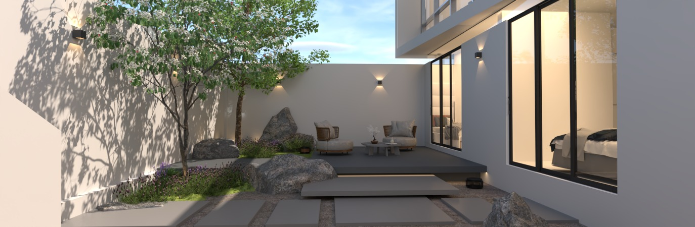

Levantamiento Topográfico Arquitectónico · Hoja 1 de 2
Lote 8, Manzana 147
Fraccionamiento México, Morelia, Mich.
Expediente digital del predio ubicado en Colonia Puerto de Buenavista, Morelia, Michoacán. Incluye poligonal interactiva calculada desde coordenadas UTM, cuadro de construcción, plano topográfico oficial en PDF y modelo 3D en SketchUp.

Geometría a escala real
Poligonal y Cuadro de Construcción
Cuadro de Construcción
Área = 281.30 m²| Lado | Rumbo | Dist. (m) | V | UTM X | UTM Y |
|---|
Colindancias y cotas destacadas
- Lado 1–2 (13.06 m): Colinda con Lote 9.
- Lado 2–3 (20.10 m): Colinda con Calle (subtramos 7.38 m + 12.72 m).
- Lado 3–4 (15.07 m): Frente hacia Calle Zacamixtle.
- Lado 4–1 (20.00 m): Colinda con Lote 7 (subtramos 12.79 m + 7.21 m).
Visor WebGL + Recorrido Virtual
Modelo 3D y Recorrido de la Casa

El visor 3D interactivo y el recorrido requieren servirse por HTTP/HTTPS (por ejemplo en GitHub Pages o localhost).
Al abrir index.html directamente como archivo local (file://), el navegador bloquea la carga del modelo .glb.

Cómo explorar el recorrido
En el modo Caminar dentro puedes saltar directamente entre Planta Baja, 1er Nivel y Azotea, o usar las teclas Q y E para subir y bajar libremente.
Visualización arquitectónica
Galería de Renders del Proyecto



Documentación oficial
Plano Topográfico (PDF)
Datos de referencia